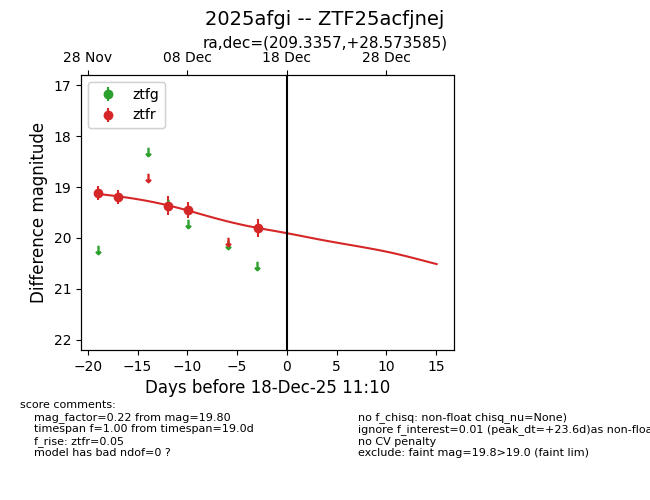
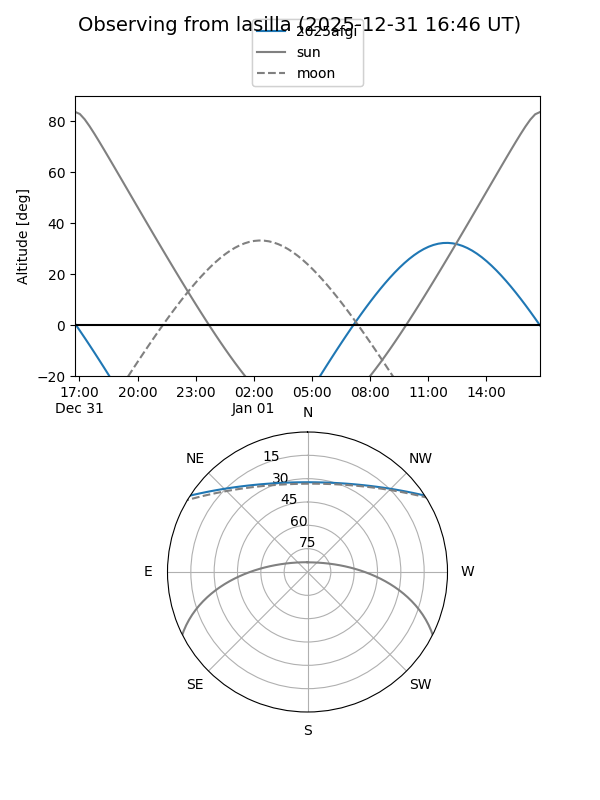
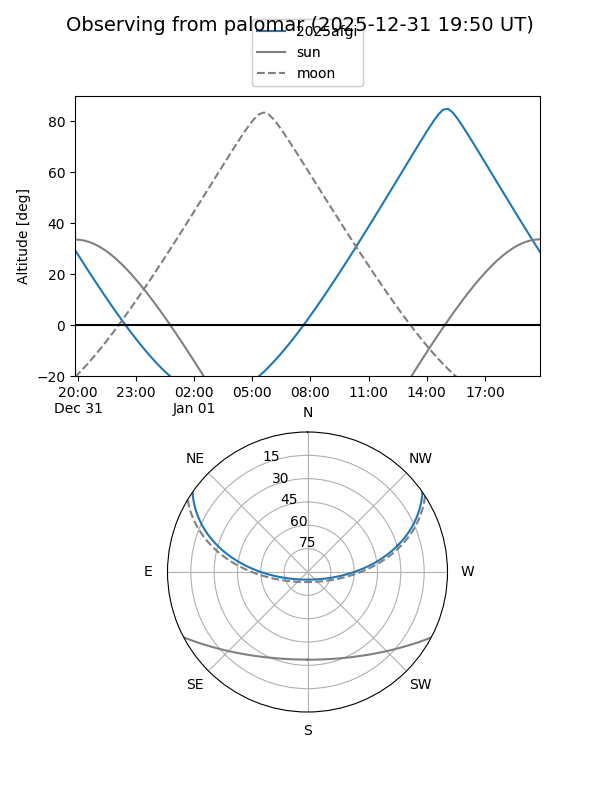
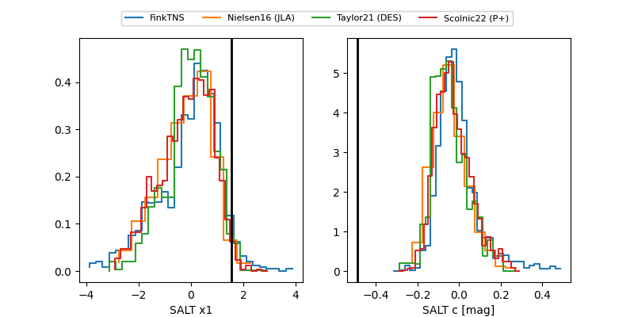

2025afgi
Target 2025afgi at 2025-12-31 17:59
Aliases and brokers:
FINK: link
Lasair: link
ALeRCE: link
TNS: link
YSE: link
alt names
ZTF25acfjnej (ztf,fink_ztf)
2025afgi (tns,yse)
Coordinates:
equatorial (ra, dec) = 209.3357,+28.57358
equatorial (HMS+DMS) = 13:57:20.58,+28:34:24.91
galactic (l, b) = (42.4287,+75.37241)
Flags:
Photometry:
last ztfr=19.80
5 ztfr detections
Lightcurve

Visibility


Additional plots
